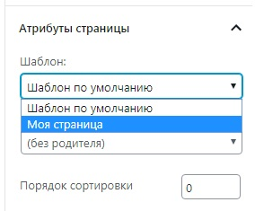
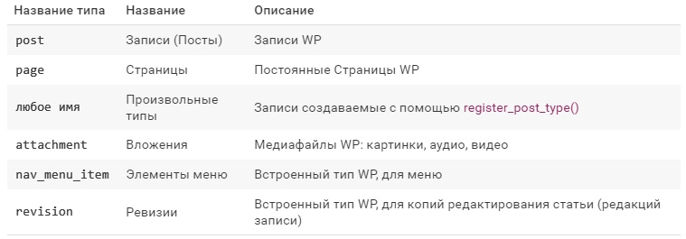
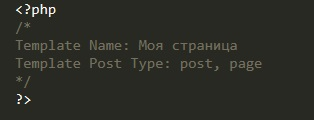
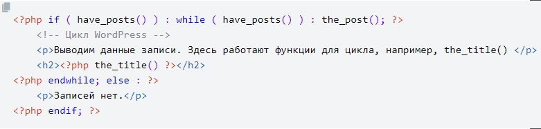
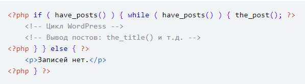
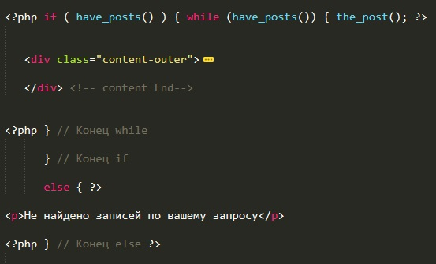
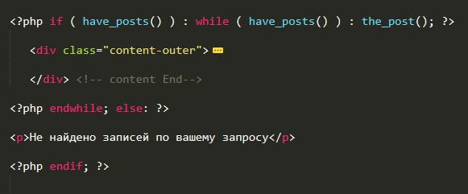

Для создания шаблона страницы необходимо создать файл php. Назвать его как душе угодно и в самом верху документа надо просто добавить коментарий такого типа:
После этого в настройках страницы в WP появится новый пункт, где можно выбрать шаблон нашей страницы. Теперь при открытии этой страницы она будет открываться с нужной версткой.
Начиная с версии WP 4.7 можно задавать и шаблоны разных типов записей. Для этого в том же комментарии надо добавить строчку.
Template Post Type:
После двоеточия можно указать через запятую типы записей которые смогут использовать этот шаблон. Рассмотрим какие тимы записей существуют в WP
Тоесть для того что бы создать шаблон для постов и одновременно для страниц текст комментария должен будет выглядеть так:
В теле документа для вывода информации поста используем те же функции что и в теме "Вывод записей (постов)"
После тогокак мы сделали вывод списка постов, нам надо сделать шаблон страницы которая будет открываться после того как кликнули по конкретному посту для просмотра его содержимого. Скажу сразу была больша проблема с функциями the_content(), the_excerpt(). Оказалось что в WordPress есть определенные теги шаблона, которые не работают за пределами цикла, например: the_title(), the_content(), the_excerpt() и т.д. Для того, чтобы каждая такой тег шаблона сработал, должна быть определена переменная $post, которая за пределами цикла WordPress неизвестна. иными словами, что бы отобразить содержимого поста так же необходимо делать цикл. Вот как он выглядит в шаблоне.
Еще его можно записать вот так:
Код можзно скопировать отсюда
у меня цикл в итоге выглядел вот так:
Вот еще в первом варианте:
В теге div мы уже пользуемся стандартными функциями вывода информации и все прекрасно работает